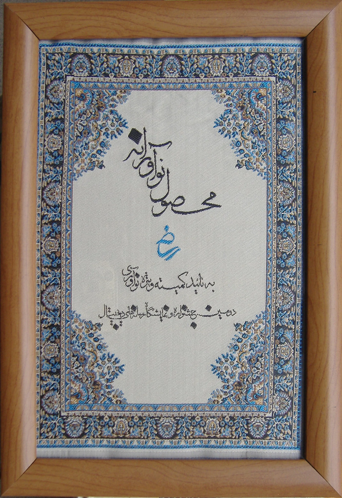
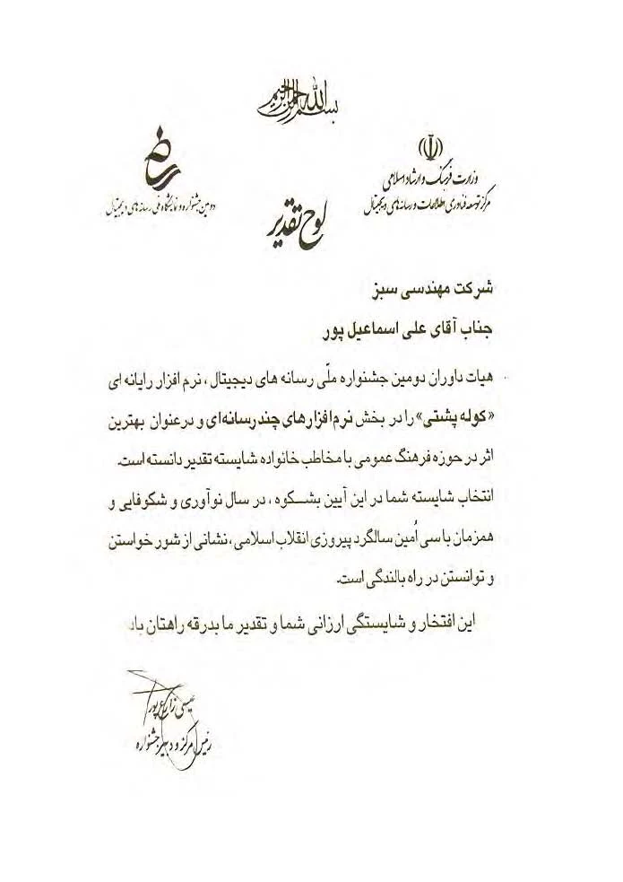
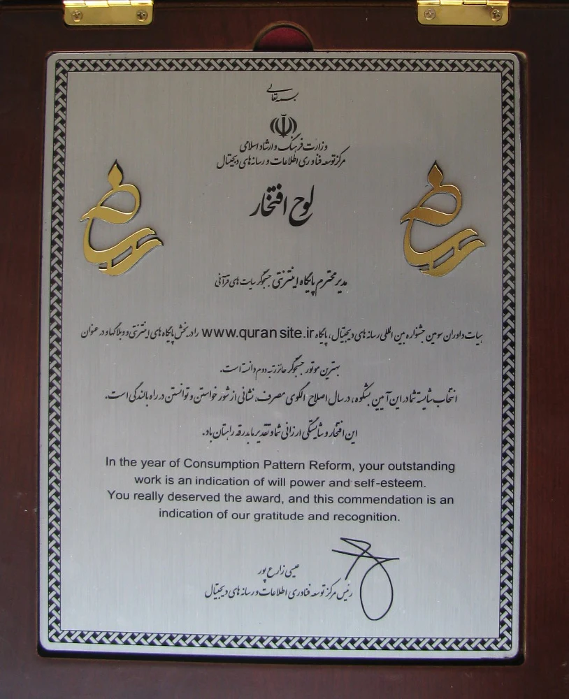
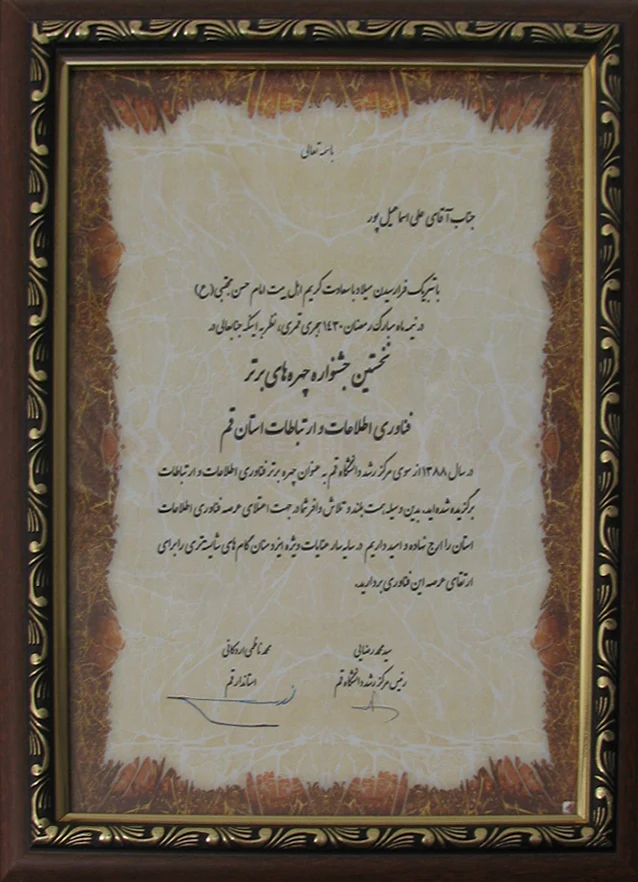
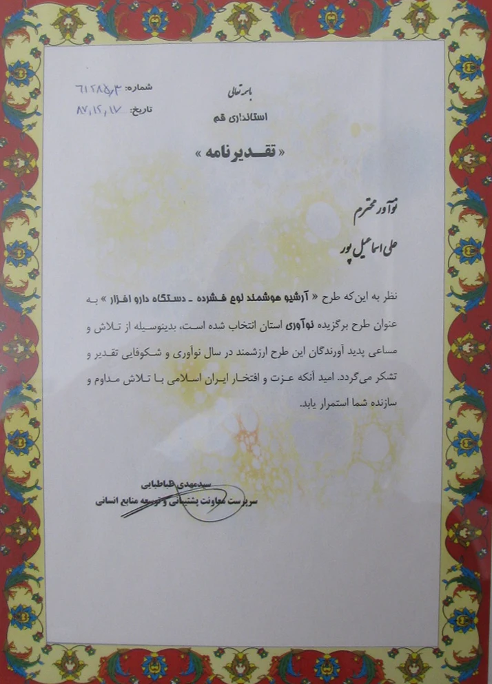

۱۳۸۶
محصول نوآورانه – دومین جشنواره رسانههای دیجیتال
ارائه نرمافزار جامع موفقیت و کسب عنوان محصول نوآورانه در دومین جشنواره رسانههای دیجیتال.

روایتی از مسیر بیش از دو دهه فعالیت در فناوری اطلاعات، توسعه محصولات دیجیتال، نوآوری و حضور حرفهای در حوزه رسانههای دیجیتال و فناوری اطلاعات.
افتخارات در این صفحه به عنوان نشانهای از مسیر توسعه محصول، نوآوری و تجربه حرفهای نمایش داده میشوند.
ارائه نرمافزار جامع موفقیت و کسب عنوان محصول نوآورانه در دومین جشنواره رسانههای دیجیتال.

نرمافزار چندرسانهای «کولهپشتی» به عنوان اثر برگزیده جشنواره انتخاب شد.

پایگاه Quran.site.ir به عنوان یکی از پروژههای منتخب حوزه رسانه دیجیتال معرفی شد.

انتخاب به عنوان فناور برتر فناوری اطلاعات و ارتباطات.

تقدیر بابت ارائه طرح «آرشیو هوشمند لوح فشرده - دستگاه دارو افزار».
